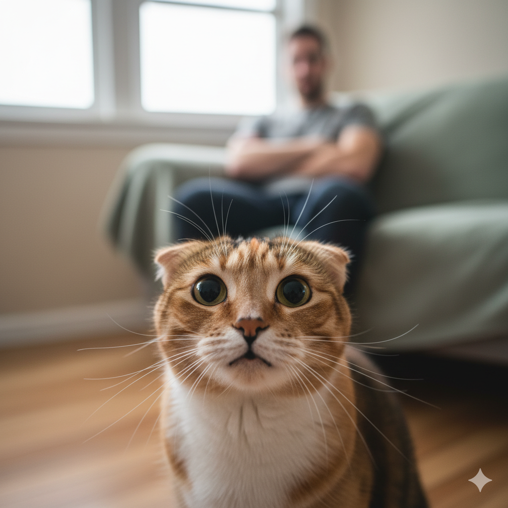

🐾 Por que gritar com seu gato não resolve nada

Por Plantas & Gatos - Convivência com respeito, empatia e amor felino
Sabe quando seu gato derruba aquele vaso que você ama, arranha o sofá novinho ou salta no balcão pela milésima vez, e você se pega gritando ou fazendo aquela cara de bravo? Pois é... ele não entende nada disso do jeito que você imagina.
Gatos simplesmente não processam "bronca" como a gente. Quando você levanta a voz, aponta o dedo ou dá aquele susto nele, ele não faz a conexão entre o que fez e sua reação. O que passa pela cabecinha dele é bem diferente: "meu humano tá estranho... será que devo ter medo?"
O cérebro dos gatos não funciona como o nosso. Eles não pensam "ah, fiz isso e deixei meu tutor bravo". O que fica registrado é: "essa pessoa que eu confio às vezes fica assustadora sem motivo". E aí a confiança começa a rachar. Pode até piorar tudo, gerando comportamentos como se esconder o tempo todo, fazer xixi fora da caixinha ou até ficar agressivo.
💔 O que acontece por dentro quando você grita
Imagina viver num lugar onde, de repente, alguém grita com você sem você entender o porquê. É mais ou menos assim que seu gato se sente. O corpinho dele dispara hormônios de estresse — principalmente o cortisol — e ele passa a ver a casa como um lugar tenso, não mais como seu refúgio seguro.
Com o tempo, isso vira uma bola de neve. Você pode começar a notar coisas como:
- Ele se lambe compulsivamente, até fazer feridas;
- Para de comer direito;
- Fica isolado, escondido embaixo da cama;
- Faz xixi ou cocô fora da caixa de areia;
- Fica inquieto, não dorme bem, foge quando você se aproxima.
Não é birra. É angústia de verdade.
🌱 O que realmente funciona (e é mais simples do que parece)
Educar um gato é totalmente possível — mas pelo caminho dele, não pelo nosso. Em vez de brigar, tente entender o porquê do comportamento:
- Ele arranha o sofá? Coloque um arranhador legal bem ali perto, do jeito que ele gosta (vertical, horizontal, com textura boa).
- Sobe no balcão? Ele quer altura. Dê prateleiras, nichos ou uma árvore de gato onde ele possa ficar no alto.
- Fica mexendo nas plantas? Ofereça alternativas seguras, como graminhas próprias pra gato, e brinquedos que despertem a curiosidade dele.
E sempre que ele fizer algo certo — mesmo que seja pequeno —, reforce. Um carinho, um elogio animado, um petisco... ele vai associar aquilo a algo bom e vai repetir naturalmente.
💬 Resumindo com o coração
Gritar pode até fazer seu gato parar no momento, mas só por medo. E medo não ensina, não constrói nada. O que transforma um gato "difícil" num companheiro incrível é confiança, rotina tranquila e um ambiente que faça sentido pra ele.
No fim, amor e paciência sempre vencem. Gritos, nunca.
← Voltar para o blog